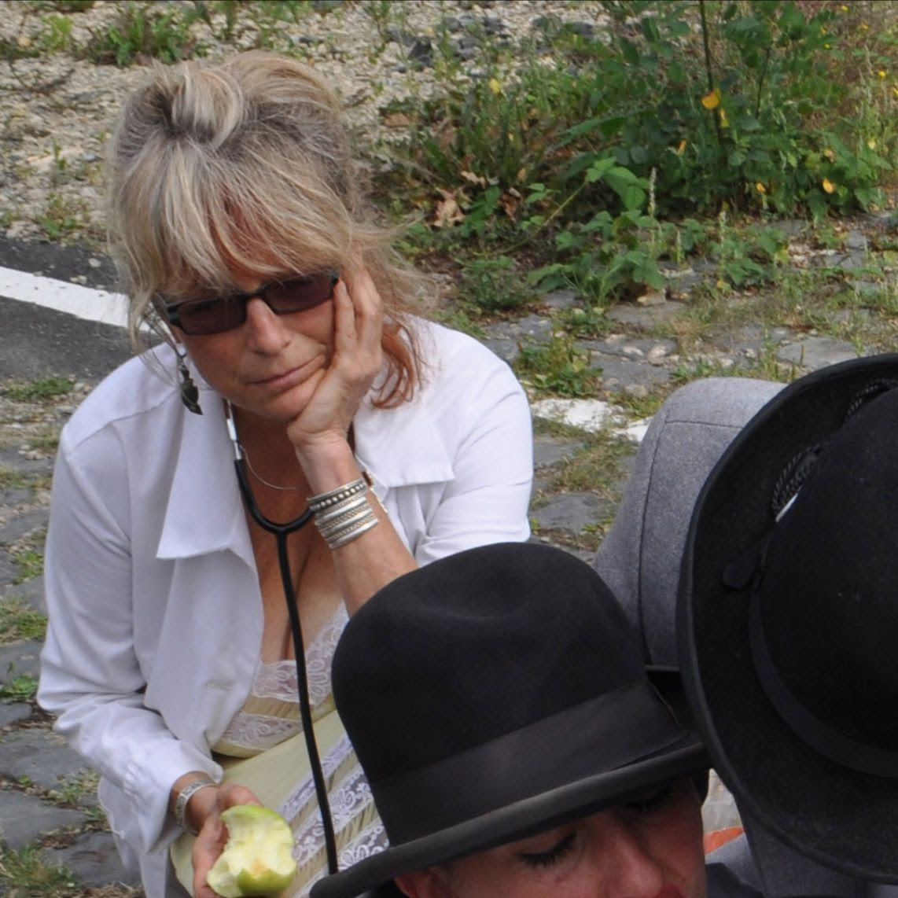
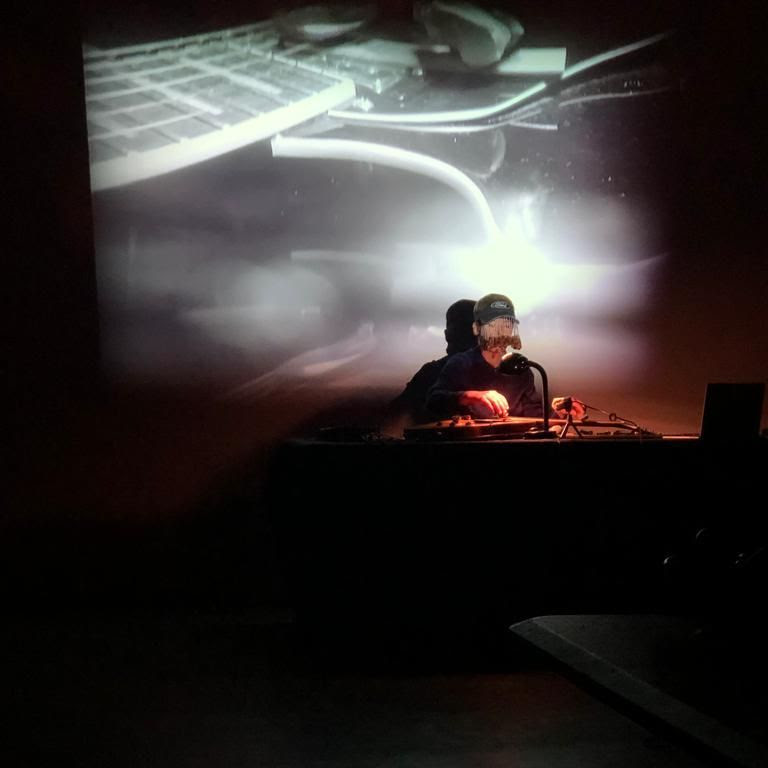
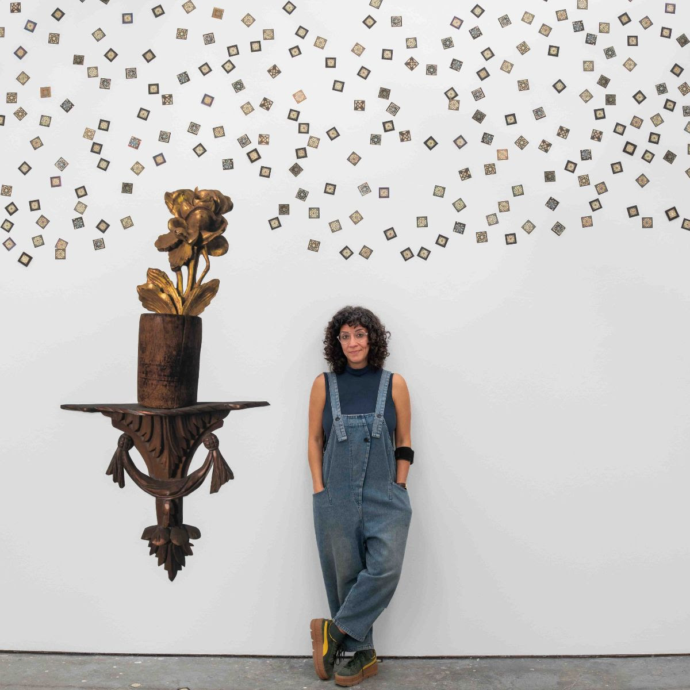
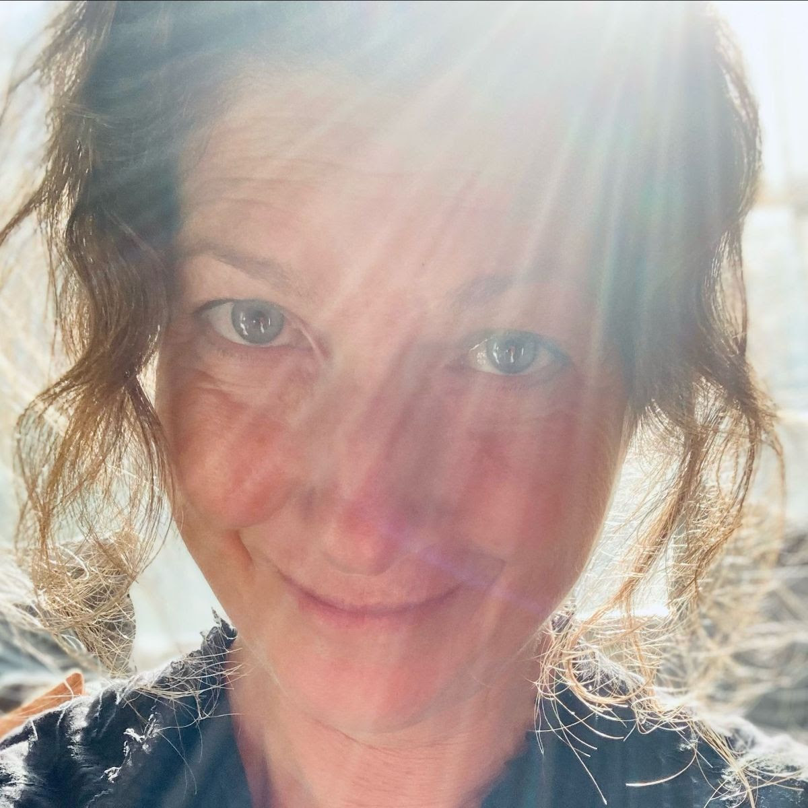
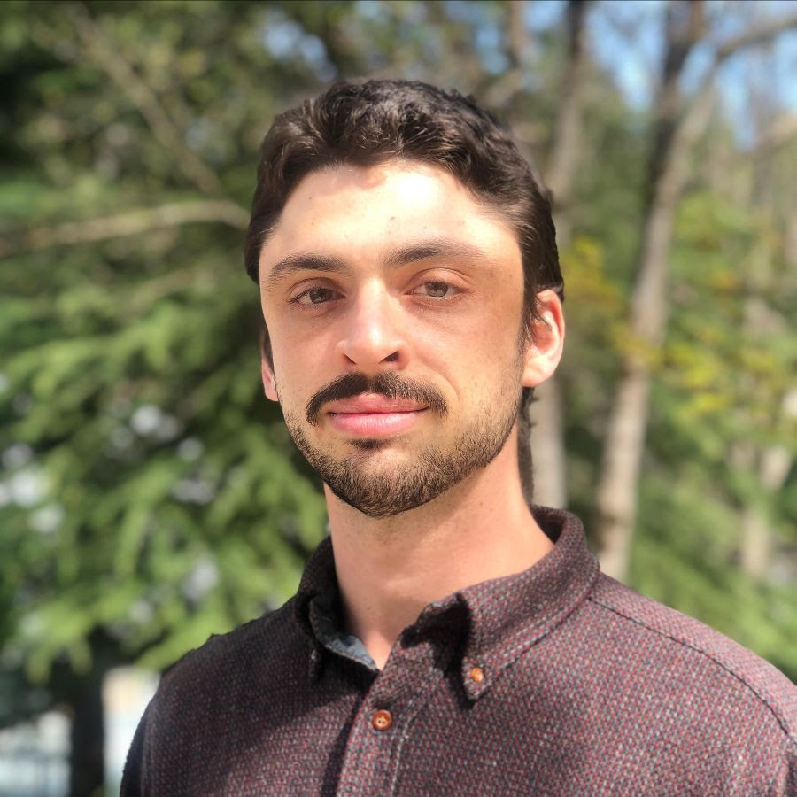
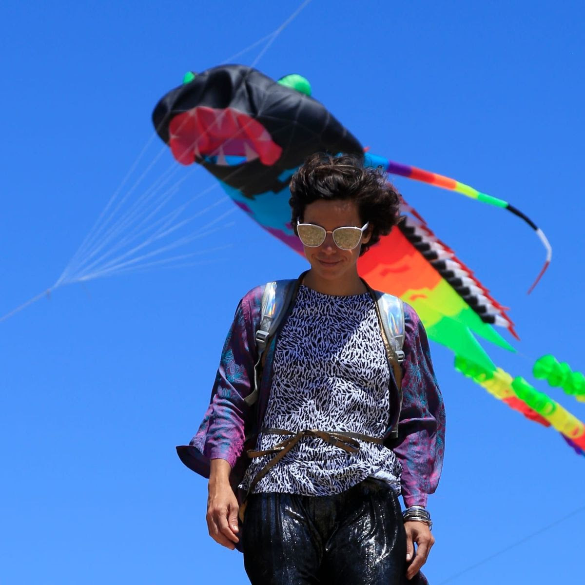
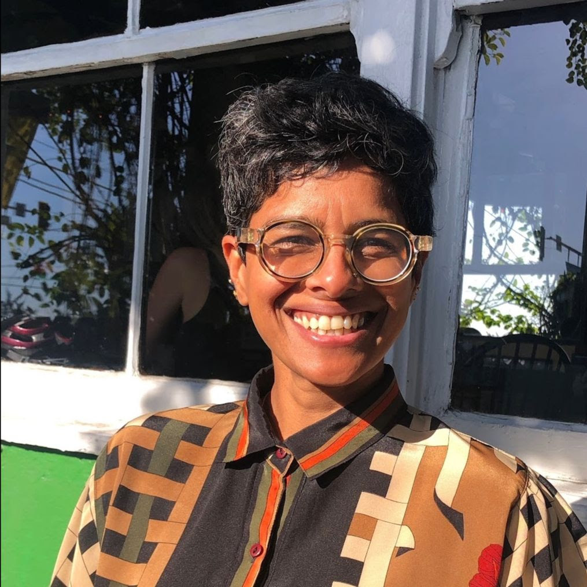

Originally founded in 2018, the Dream part of our name came from our idea of an artist’s role in dreaming into or foreshadowing new worlds and possibility; the Farm from our desire to stay grounded and productive; the Commons signifies our desire for this space to be larger than our individual practices and to be a site for gathering.
In 2026, Dream Farm Commons entered a new era of shared leadership. Sharing curation, artistic production and programming are; Ann Schnake, Charlotte Law, Ebti, Glenna Cole Allee, Jeremy Kirshbaum, Judit Navratil and Meghana Bisineer.
Located on the unceded homelands of the Ohlone people, Dream Farm Commons aims to support the survivors of the american empire across time and place, and knows we are deeply entangled in its ongoing damage.
read about us below
|  |
Ann Schnake (she/her) is the original co-founder of Dream Farm Commons and a visual artist who builds installation and sculptural works as the activation of objects, space, ideas and people. Ann was a nurse for many years, and the memory of this labor is her phantom limb. |
|  |
Charlotte Law (she/they) is a multidisciplinary artist who plays with manipulated and self-made instruments, costumes and immersive installations for speculative and collective voyaging. Charlotte is co-founder of Upstream. |
|  |
Ebti (she/her) is a multidisciplinary artist, a photographer and a translator living between Cairo and San Francisco. Alongside Dfc, Ebti is part of “Right window” & “Off Hours” collectives and is on Southern Exposure’s curatorial council. |
|  |
Glenna Cole Allee (she/her) is an interdisciplinary artist whose work explores the shifting relationships between place, myth, and memory. Allee co-founded the curatorial project MicroClimate Collective, a recipient of the Alternative Exposure Grant from Southern Exposure. |
|  |
Jeremy Kirshbaum (he/him) hopes to find new ways of thinking and feeling for himself and others through poetry, performance, and emerging technology. He conducts experiments to explore whether the future could still have collective agency |
|  |
Judit Navratil (she/her) is a transdisciplinary artist, educator and curator working with social VR and extended reality in balance with her embodied practices like long distance somersaulting and tent flying. She is the founder and curator of VR Art Camp and Folding Fields. |
|  |
Meghana Bisineer (she/they) is an Indian-born artist, curator and educator, whose multiform works traverse experimental animation, drawing, installation and performance. Meg is co-founder and curator of Eyewash Experimental Animation Salon and Upstream. |